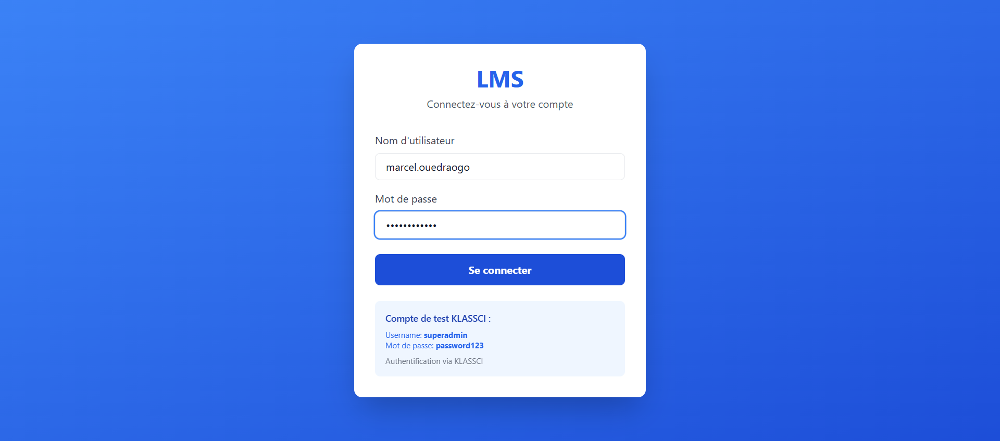
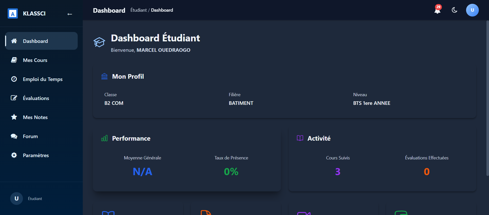
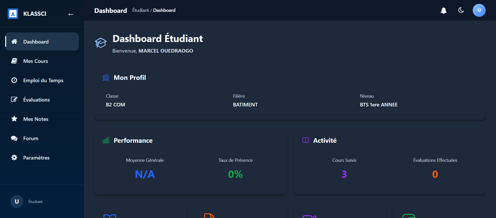
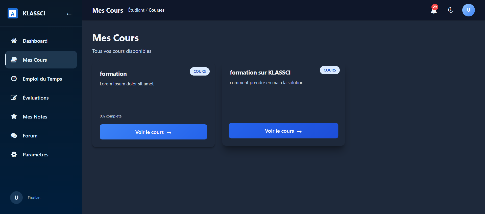
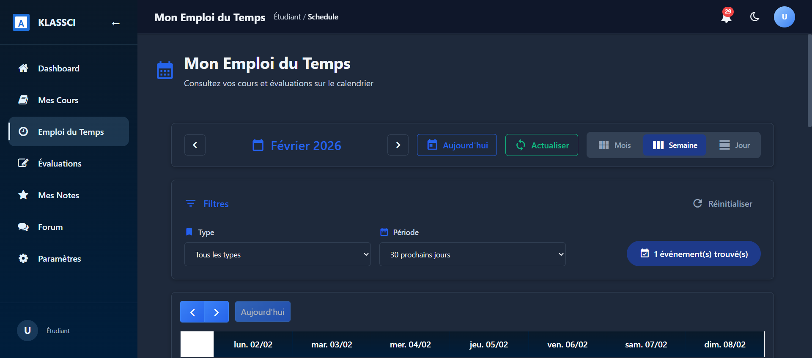
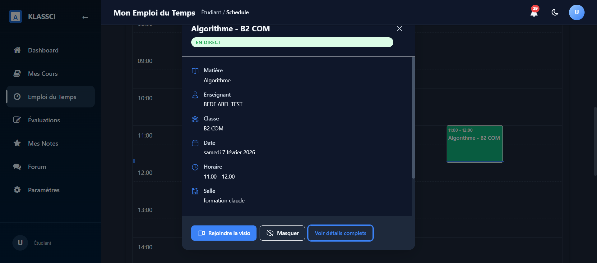
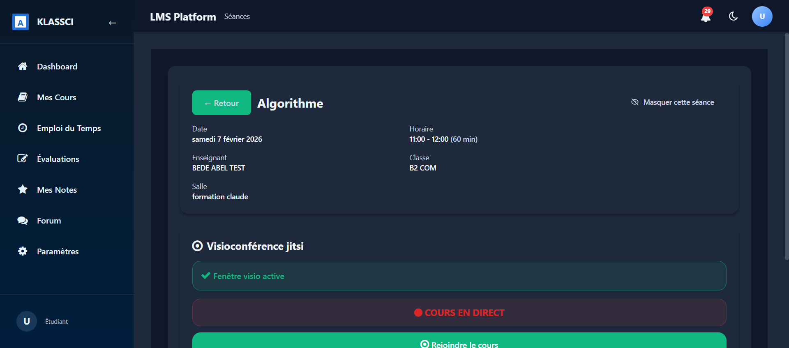
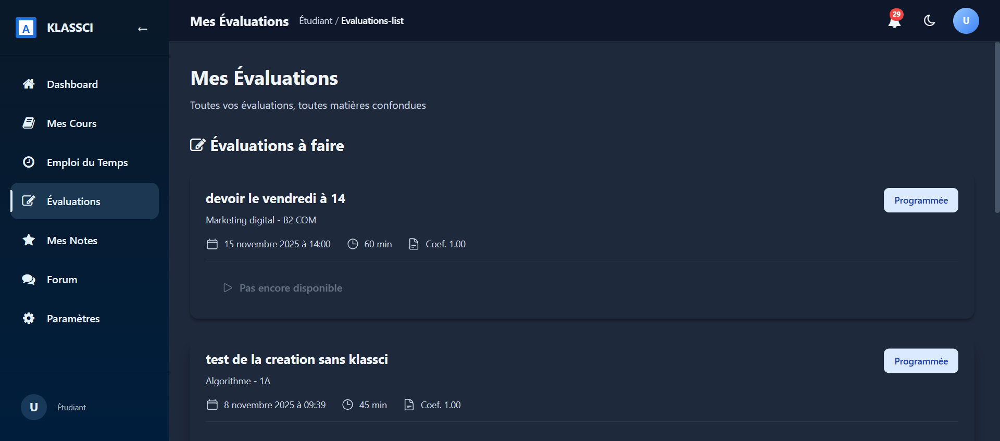
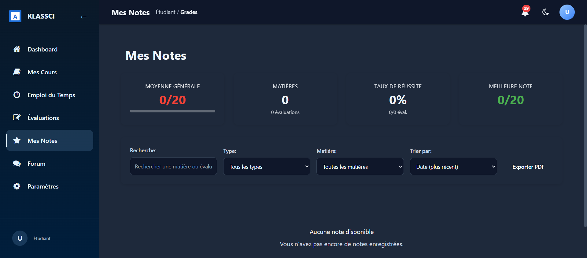
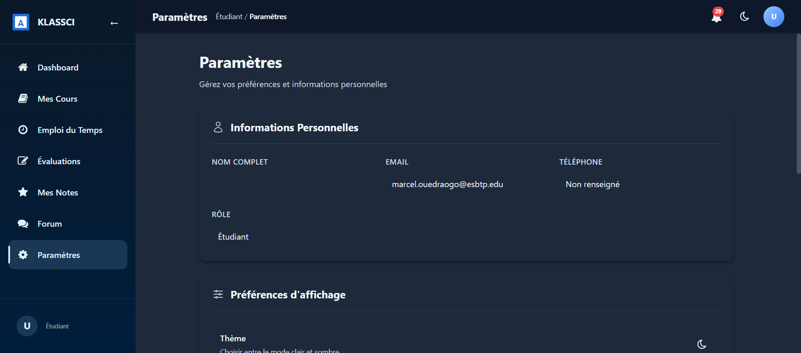

1 Connexion à la plateforme
Pour accéder à la plateforme KLASSCI LMS, ouvrez votre navigateur et rendez-vous à l'adresse fournie par votre établissement.
- Entrez votre nom d'utilisateur étudiant
- Entrez votre mot de passe
- Cliquez sur le bouton "Se connecter"

Page de connexion - Saisie des identifiants étudiant
Conseil :
Si vous avez oublié votre mot de passe, contactez votre enseignant ou le coordinateur de votre établissement.
2 Tableau de bord
Après connexion, vous arrivez sur votre tableau de bord personnel. Il vous donne un résumé de votre activité scolaire.

Tableau de bord étudiant - Vue d'ensemble
Le tableau de bord affiche :
- Vos cours en cours
- Les évaluations à venir
- Vos résultats récents
- Les notifications importantes

Vue complète du tableau de bord étudiant
3 Mes Cours
La section "Mes Cours" regroupe toutes les matières auxquelles vous êtes inscrit, avec leurs leçons et ressources.

Liste des cours et matières de l'étudiant
Depuis cette page, vous pouvez :
- Accéder aux leçons de chaque matière
- Consulter les ressources pédagogiques partagées par vos enseignants
- Suivre votre progression dans chaque cours
4 Emploi du temps
L'emploi du temps affiche toutes vos séances planifiées sous forme de calendrier interactif.

Calendrier avec les séances planifiées
Chaque séance est représentée par un bloc coloré indiquant :
- Le nom de la matière
- L'horaire de la séance
- Le statut (programmée, en direct, terminée)
Astuce :
Cliquez sur une séance dans le calendrier pour voir ses détails. Si un cours est en direct, vous verrez un bouton pour le rejoindre !
5 Rejoindre un cours en direct
Lorsqu'un enseignant démarre un cours en visioconférence, vous pouvez le rejoindre directement depuis votre emploi du temps.
Étape 1 : Repérer le cours en direct
Dans votre emploi du temps, cliquez sur la séance. Si le cours est en direct, la fenêtre modale affichera le statut "EN DIRECT" avec un bouton "Rejoindre la visio".

Fenêtre modale indiquant "EN DIRECT" avec le bouton "Rejoindre la visio"
Cours en direct !
Lorsque vous voyez le badge "EN DIRECT", cela signifie que votre enseignant a démarré le cours. Cliquez sur "Rejoindre la visio" pour accéder à la salle de classe virtuelle.
Étape 2 : Page de détails de la séance
Vous pouvez aussi accéder aux détails complets de la séance. Le statut "COURS EN DIRECT" est clairement affiché avec le bouton "Rejoindre le cours".

Page de détails avec le statut "COURS EN DIRECT" et le bouton "Rejoindre le cours"
Comment rejoindre un cours en direct
- Ouvrez votre emploi du temps
- Cliquez sur la séance qui est en direct
- Cliquez sur le bouton "Rejoindre la visio" dans la modale, ou sur "Rejoindre le cours" dans la page de détails
- Vous serez redirigé vers la salle de visioconférence Jitsi
- Autorisez l'accès à votre microphone et caméra si demandé
Important :
Le bouton "Rejoindre" n'apparaît que lorsque l'enseignant a démarré le cours. Si vous ne voyez pas le bouton, cela signifie que le cours n'a pas encore commencé.
6 Évaluations
La section Évaluations liste toutes les évaluations auxquelles vous devez participer.

Liste des évaluations disponibles pour l'étudiant
Pour chaque évaluation, vous pouvez voir :
- Le titre de l'évaluation
- La matière concernée
- La date limite de soumission
- Le statut (à faire, en cours, terminée)
Conseil :
Consultez régulièrement cette section pour ne manquer aucune évaluation. Les évaluations en attente sont mises en évidence.
7 Mes Notes
Consultez vos résultats et notes pour toutes vos évaluations passées.

Page des notes et résultats de l'étudiant
Cette section vous permet de :
- Voir vos notes par évaluation
- Suivre votre progression dans chaque matière
- Consulter les commentaires de vos enseignants
8 Paramètres
Gérez les paramètres de votre compte étudiant.

Paramètres du compte étudiant
Depuis cette page, vous pouvez :
- Modifier vos informations personnelles
- Changer votre mot de passe
- Configurer vos préférences